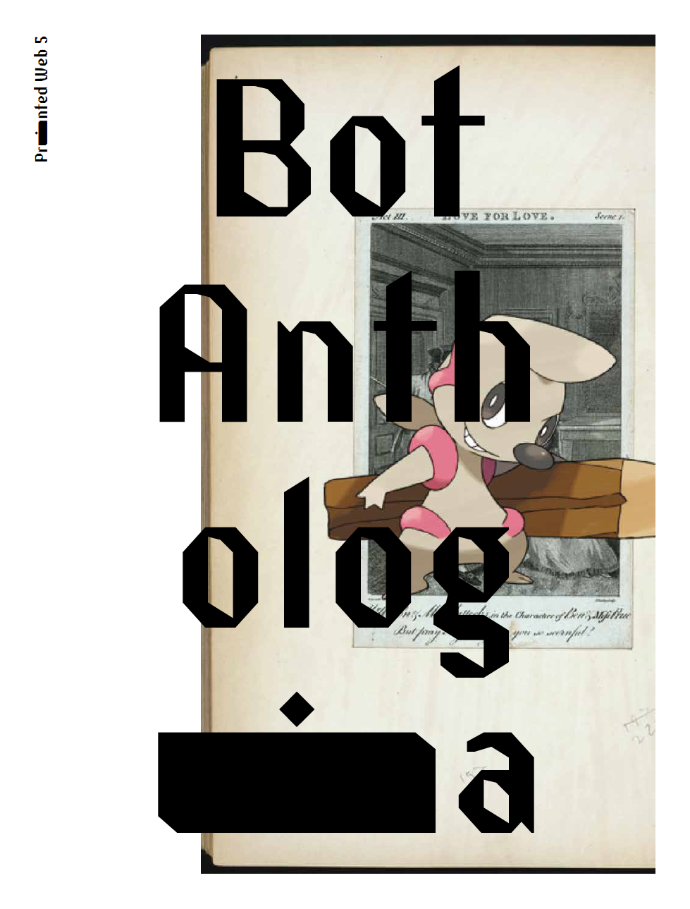
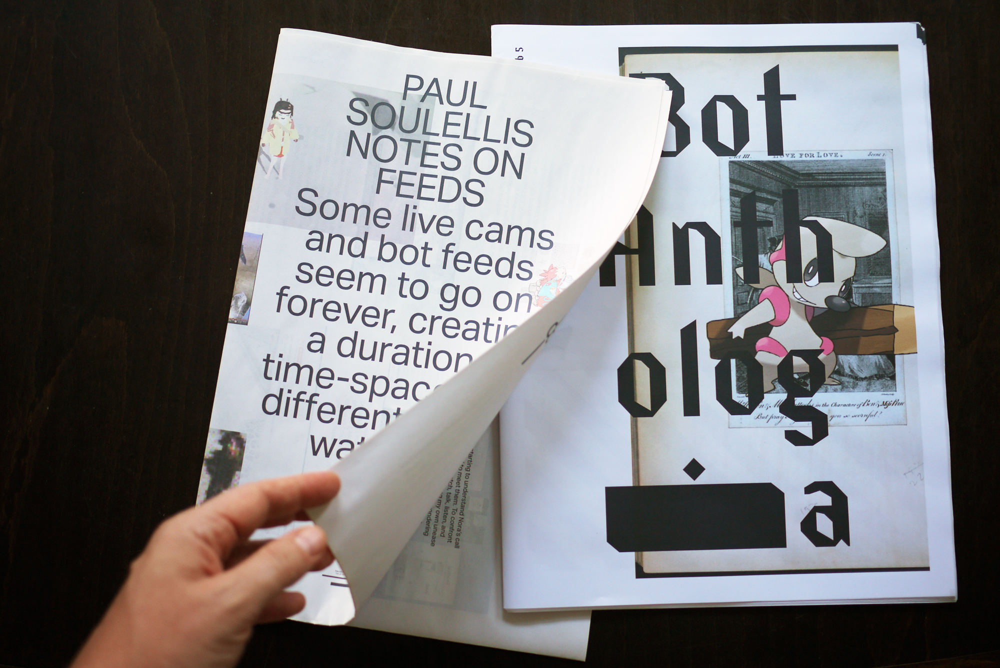
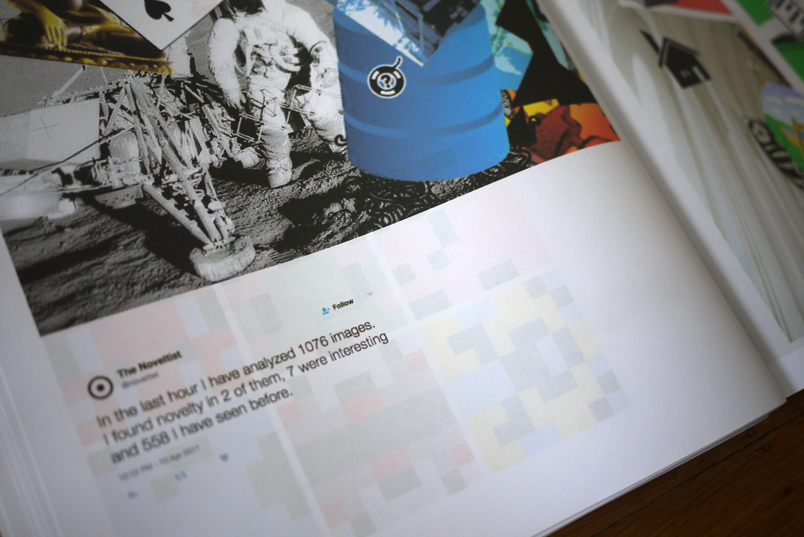
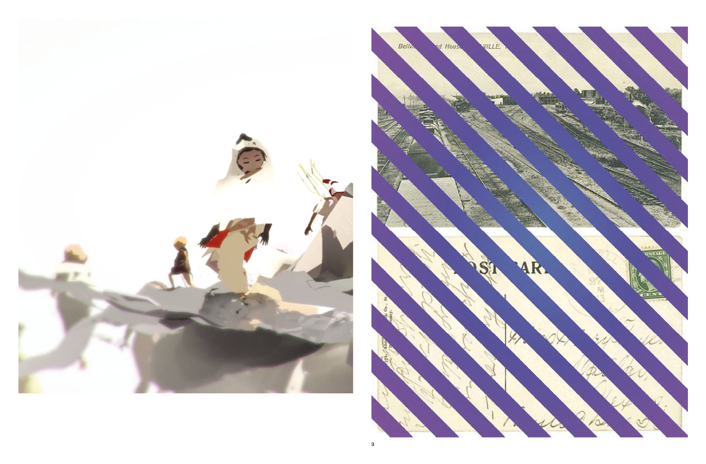
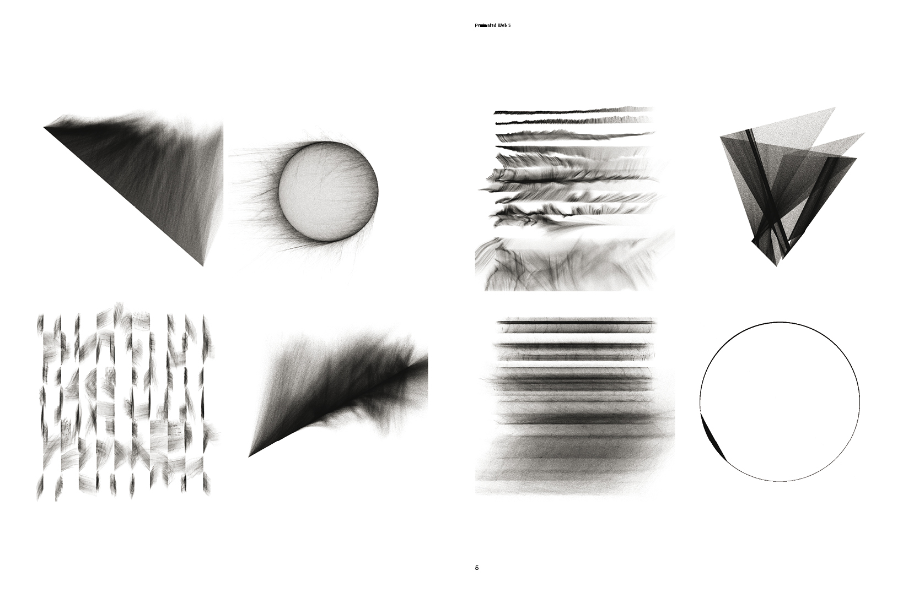
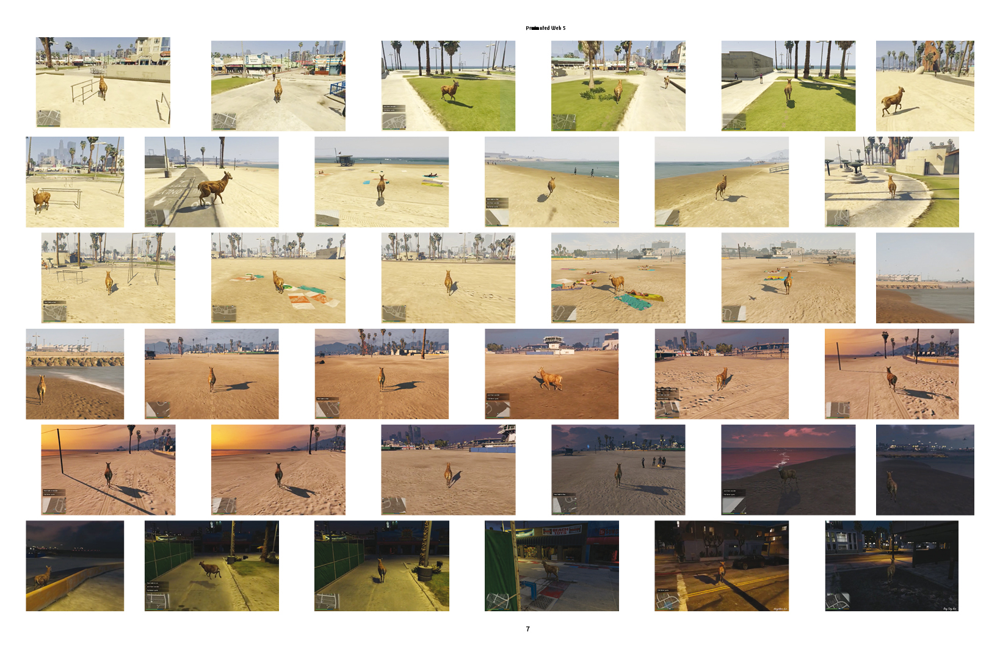
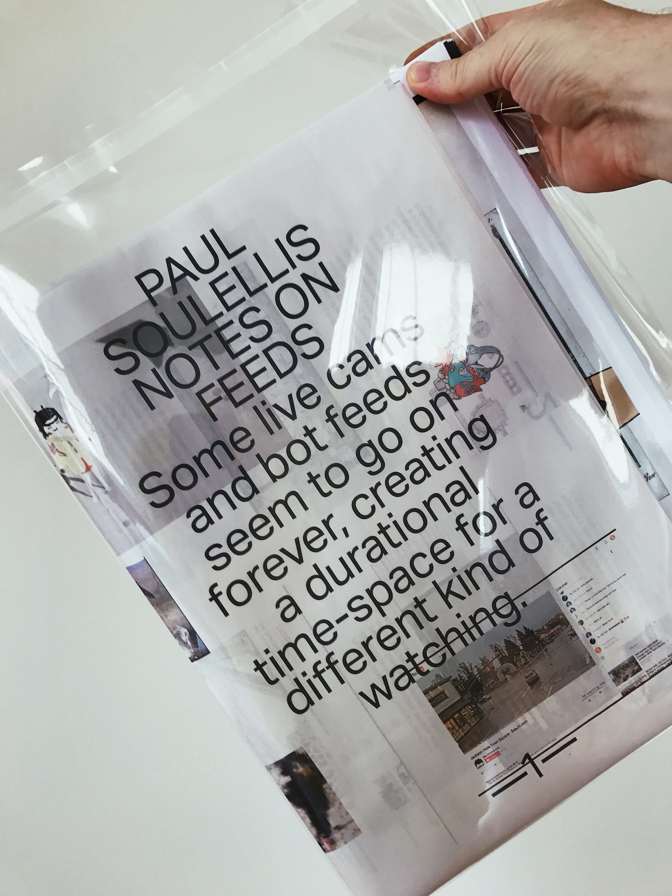

Printed Web 5: Bot Anthologia (2017)

Edited by Paul Soulellis
Incorporating “Notes on Feeds” (newsprint wrap)
11.8 in x 14 in.
64 pages
Full color printing on 90gsm bright white paper
+ 8 page newsprint cover wrap

Contributions from over 30 artists and writers working with experimental forms of algorithmic media.

“Bot Anthologia” PDF download
“Notes on Feeds” PDF download



